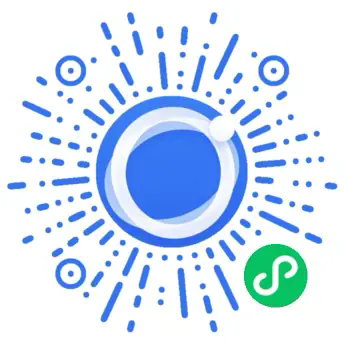

见
看见品牌是否出现
了解用户询问品类、场景、推荐和比较问题时，你的品牌在哪些答案中出现、在哪些高价值问题中缺席。
GEO，就是优化品牌在 AI 搜索、回答与推荐场景中的可见度。 当用户开始向 AI 询问“哪家更好”“怎么选”“推荐什么”时，GeoGi 帮助你看清品牌有没有进入答案、AI 是否正确理解你、竞品为什么更容易进入候选，并把差距转化为可执行的增长机会。
过去客户先搜索网页，现在越来越多的人直接让 AI 推荐、比较和解释品牌。GeoGi 帮助企业看清自己在这个新入口中的位置，并找到影响用户选择的关键差距。
了解用户询问品类、场景、推荐和比较问题时，你的品牌在哪些答案中出现、在哪些高价值问题中缺席。
检查 AI 对品牌定位、产品、服务、优势和适用场景的理解是否准确，及时发现错误、过期或模糊信息。
比较品牌与竞品在相同用户问题中的表现，定位内容、事实、场景覆盖与公开信息差距，明确最值得优先改善的方向。
真正有价值的 GEO 诊断，不是给品牌一个孤立分数，而是告诉你问题发生在哪里、为什么值得关注、下一步先做什么。
不是一份只有结论的报告，而是一张能帮助市场、品牌和管理层快速决策的 AI 可见度地图。
从品牌出现、信息准确、竞品差距到优先动作，把模糊感受拆成团队可以讨论和执行的增长问题。
查看品牌在品类发现、场景需求、比较和推荐问题中的出现情况。
定位产品、定位、价格、服务范围等错误或过期信息。
对比相同问题下的品牌出现、候选理由与信息完整度差异。
把官网、FAQ、品牌事实、场景内容和可信信息按影响优先级排列。
不用一开始就做复杂项目。企业可以从看清现状开始，再根据问题深度进入系统诊断和持续优化。
快速了解品牌在核心 AI 决策场景中的基础表现，判断是否存在明显的缺席、误解或竞品优势。
从平台表现、用户场景、品牌事实和竞品差距多个维度建立完整诊断，帮助团队知道问题在哪里、先解决什么。
持续完善品牌事实、官网内容、用户问题覆盖与可信信息，让 GEO 从一次诊断变成长期能力。
对于多品牌、多产品线或需要执行陪跑的企业，可在持续优化阶段进一步定制企业级方案。
每一步都回到客户真实决策：用户怎么问、品牌怎么出现、信息哪里不清楚，以及哪些动作最值得优先推进。
明确品牌、产品、目标用户、核心业务和主要竞争对手。
围绕发现、比较、选择、风险和购买等真实决策场景建立问题体系。
观察品牌在主流 AI 平台中的提及、描述、候选与竞品表现。
定位品牌事实、页面内容、用户场景和公开信息中的关键问题。
优先改善影响最大的品牌信息、官网页面、内容与可信来源。
观察品牌在重要问题中的表现是否改善，并据此调整下一阶段策略。
用户不会只使用一个 AI。GeoGi 从多个主流平台观察品牌提及、信息准确、候选表现、竞品差距与公开来源。
当购买前需要反复比较品牌、价格、口碑、专业能力和适用场景时，AI 的答案更容易影响候选名单。
适合高信任、高信息密度的服务决策，重点改善服务边界、专业能力和品牌差异表达。
覆盖课程选择、机构比较、职业发展与学习方案等长决策链问题。
从 GEO 基础、AI 平台变化到竞品表现和行业趋势，GeoGi Research 帮助企业理解新的品牌发现入口，并把趋势转化为更清楚的经营判断。
不是。SEO 帮助网页被搜索和发现，GEO 进一步关注品牌能否进入生成式 AI 的答案、比较与推荐。两者都依赖清晰、真实、有价值的品牌信息和内容基础。
任何服务都不应承诺固定推荐结果。GeoGi 的目标是持续改善品牌信息的完整性、可信度和场景匹配，让品牌拥有更好的 AI 可见度基础和更多进入关键答案的机会。
因为“没出现”“信息说错”“被竞品压过”“缺少可信来源”是完全不同的问题。真正有价值的诊断，需要告诉你差距发生在哪里，以及下一步应该优先做什么。
GeoGi 当前业务聚焦中国市场，重点关注国内主流 AI 平台和中国用户的真实决策场景。研究中心也会参考全球公开研究，帮助企业理解更广泛的 GEO 趋势。
微信扫码进入 GeoGi 小程序，快速开始品牌 AI 可见度初步诊断。适合品牌、市场和增长团队做前期自查、内部沟通与正式深度诊断前的初步判断。

微信扫码进入 GeoGi 小程序快速开始品牌 AI 可见度初步诊断告诉我们你的品牌、行业和最关心的竞争问题，GeoGi 可以从品牌 AI 可见度诊断开始，帮助你找到值得优先解决的 GEO 机会。